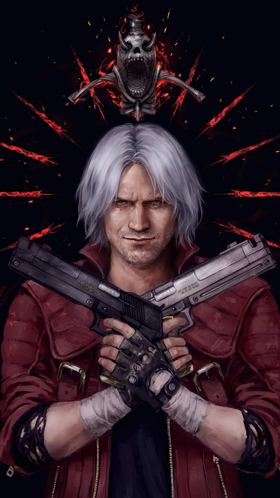

|  | BIOGRAFIA |
|---|---|
|
Dante é um caçador de demônios meio-humano e meio-demônio,
filho do lendário cavaleiro Sparda. Após perder sua mãe e se separar de seu irmão gêmeo,
Vergil, Dante passou a viver como mercenário, caçando criaturas infernais e
enfrentando ameaças demoníacas que poucos ousariam encarar. Apesar da personalidade descontraída,
sarcástica e provocadora, ele possui um forte senso de justiça e um poder imenso herdado de Sparda.
Sua vida é marcada por batalhas contra o submundo e pelo desejo de proteger a humanidade do caos demoníaco. | |
| ARMAS | |
|
Rebellion: Espada grande, símbolo do legado de Dante. Serve para cortes poderosos e canalização de seu poder demoníaco. Ebony & Ivory: Dois revólveres personalizados. Velocidade, precisão e estilo — marca registrada de Dante. | |
| Habilidades | |
|
Mestre do Estilo de Combate: Alterna entre estilos com enorme fluidez. Regeneração Demoníaca: Sua herança de Sparda o torna muito resistente e capaz de se recuperar rápido. Devil Trigger: Transformação que libera seu poder demoníaco, ampliando tudo: força, velocidade e ataques. |